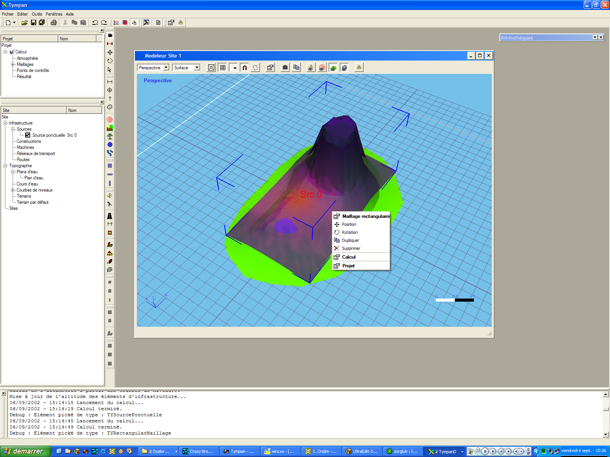

Table des matières
A propos de Tympan 3.0

Tympan est un logiciel d'étude
de polution sonore sur l'environnement extérieur.
Fonctionnalités principales
:
- Code acoustique basé sur
l'expérience de EDF-AMA
- Interface de type workspace (espace
de travail) orienté projet
- Modeleur 3D
- Bibliothèque de données
métiers
- Echange de données métiers
en XML
- ...?